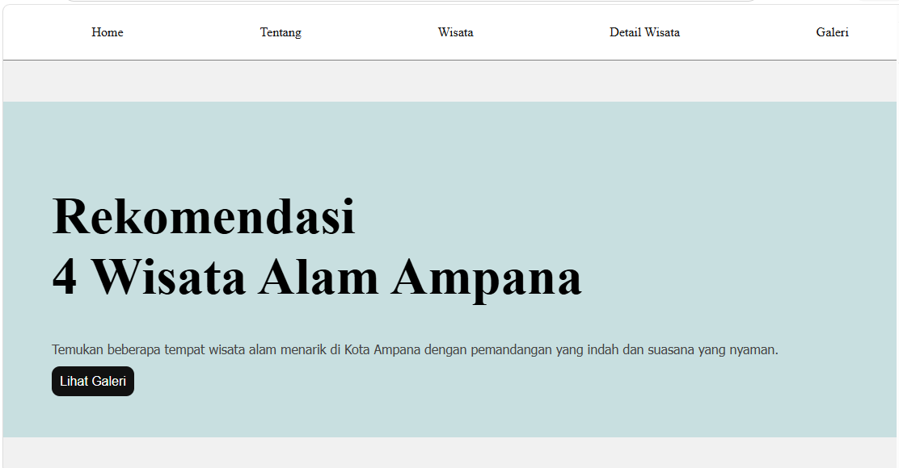

Project ini merupakan website wisata sederhana yang dibuat menggunakan HTML dan CSS. Website berisi beberapa rekomendasi tempat wisata alam di Kota Ampana seperti Tanjung Api, Pantai Pasir Putih, Pemandian Malotong, dan Tanjung Lawaka. Selain menampilkan informasi wisata, website ini juga memiliki tampilan galeri foto dan lokasi maps untuk memudahkan pengunjung melihat lokasi wisata.
Dalam proses pembuatan website ini, saya melakukan beberapa tahap sederhana untuk mengumpulkan informasi dan menentukan tampilan website yang sesuai.
Dalam proses pengembangan website, saya mencoba membuat tampilan yang sederhana, rapi, dan mudah digunakan oleh pengunjung.
Melalui project ini, saya mendapatkan pengalaman dan pemahaman dasar dalam membuat website menggunakan HTML dan CSS.